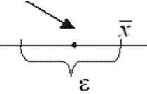

9.5. Монотонные
последовательности
Последовательность  называется
неубывающей (невозрастающей), если каждый последующий член этой
последовательности не меньше (не больше) предыдущего, т.е. если для всех
номеров
называется
неубывающей (невозрастающей), если каждый последующий член этой
последовательности не меньше (не больше) предыдущего, т.е. если для всех
номеров  справедливо неравенство ().
справедливо неравенство ().
называется
неубывающей (невозрастающей), если каждый последующий член этой
последовательности не меньше (не больше) предыдущего, т.е. если для всех
номеров справедливо неравенство ().Неубывающие и невозрастающие последовательности называются монотонными
последовательностями.
Если вместо нестрогих неравенств и
имеют место строгие неравенства или ,
то последовательности называются возрастающей и убывающей
соответственно.
1˚. Последовательность –
неубывающая.
2˚. Последовательность –
возрастающая, так как > .
.
.Действительно,
.
3˚. Последовательность  –
убывающая, так как
–
убывающая, так как
–
убывающая, так как.
Признак сходимости монотонной последовательности. Если
неубывающая (невозрастающая) последовательность ограничена
сверху (снизу), то она сходится.
ограничена
сверху (снизу), то она сходится.
Докажем, что если неубывающая последовательность ограничена
сверху, то она сходится (имеет предел).
Доказательство:
– ограничена
сверху  имеет
покажем, что .
имеет
покажем, что . ;
;- найдется элемент , (по
условию ‑неубывающая последовательность), т.е. запишем
последовательно:
,
то есть по определению предела .
1˚. Любая неубывающая последовательность всегда
ограничена снизу первым элементом. Любая невозрастающая последовательность всегда
ограничена сверху первым элементом.
2˚. Не всякая сходящаяся последовательность является монотонной.
, ,
, однако –
немонотонная.Неограниченная монотонная последовательность является
бесконечно большой.